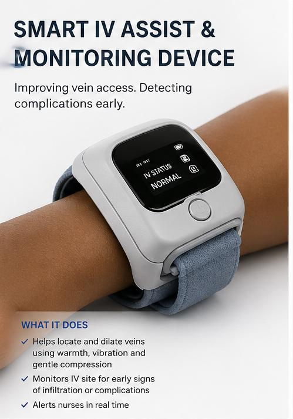
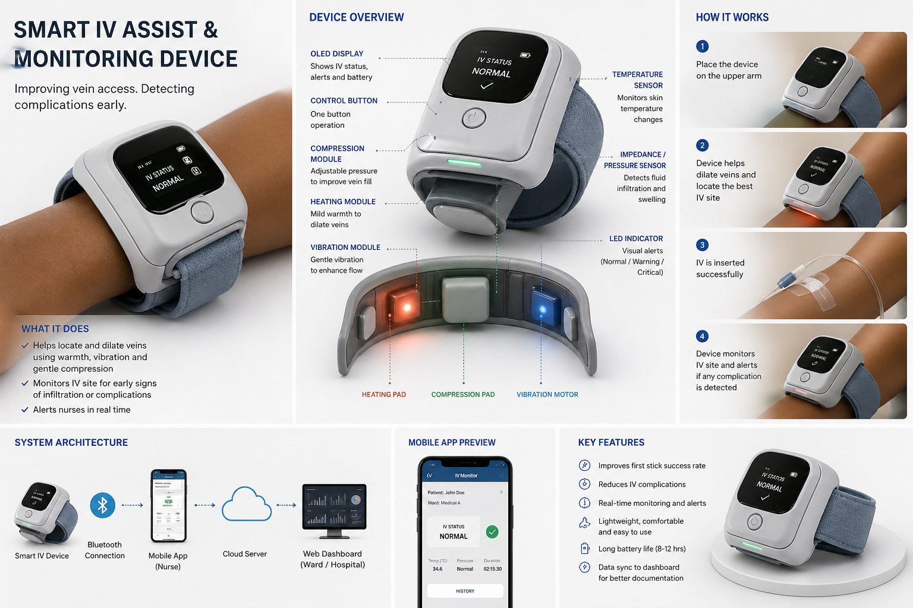

Smart IV Assist and Monitoring Device
Improving vein access. Detecting complications early.

1. Executive Summary
The Smart IV Assist and Monitoring Device is a wearable embedded system designed to improve first-stick success rates, reduce insertion pain, and detect complications early. It combines active vein dilation, Gate Control Theory pain modulation, continuous monitoring, and wireless nurse alerting.
The device integrates a heating module, vibration motor, and compression pad to prepare veins before cannulation. After insertion, impedance, pressure, and temperature sensing detect early signs of infiltration or phlebitis, triggering LED and mobile alerts. Bluetooth sends data to a nurse app and a hospital dashboard.
This project is the capstone of the Embedded Systems program at Gearbox Academy, Nairobi, and is the foundation for a future health-tech venture focused on East African hospitals.
2. The Clinical Challenge
Global pain points
- First-attempt IV failure rates of 20 to 40 percent.
- IV insertion is among the most painful routine procedures.
- Infiltration affects up to 50 percent of peripheral IV lines.
- Manual monitoring is time-consuming and inconsistent.
- Phlebitis and occlusion increase material costs.
Kenyan context
- High patient-to-nurse ratios and limited monitoring tools.
- Limited access to vein visualization equipment.
- Hard-to-cannulate patients are common in public hospitals.
- No affordable local solution covering insertion and monitoring.
3. Proposed Solution
Pre-insertion assistance
- Heating module for controlled vasodilation.
- Vibration motor to enhance blood flow and reduce pain.
- Compression pad to improve vein fill and turgor.
- OLED screen to guide preparation steps.
Pain modulation
- Activates A-beta fibers with gentle vibration.
- Inhibits A-delta and C-fiber pain signals.
- Drug-free reduction of insertion pain.
- Based on Gate Control Theory and vibration analgesia.
Post-insertion monitoring
- Impedance and pressure sensing for infiltration detection.
- Temperature monitoring for early phlebitis signs.
- Tri-color LED for ward visibility.
- BLE alerts to the nurse mobile app.
4. System Architecture
| System layer | Description |
|---|---|
| Device (hardware) | Wearable arm device with sensors, actuators, OLED display, and Bluetooth module. |
| Mobile app | Nurse-facing app showing IV status, alerts, and history. |
| Cloud server | Stores IV session data, alert logs, and analytics. |
| Web dashboard | Ward and hospital-level oversight for administrators. |

5. Hardware Components and Specs
| Component | Description | Function |
|---|---|---|
| ESP32 microcontroller | Dual-core 240MHz with Wi-Fi and Bluetooth | Central control and wireless communication |
| OLED display (SSD1306) | 128x64 I2C | Status output and user interface |
| MLX90614 IR sensor | Non-contact temperature sensor | Skin temperature monitoring |
| AD5933 impedance IC | Precision impedance measurement | Detects infiltration and swelling |
| PTC heating element | Self-regulating heater | Controlled vein dilation via warmth |
| ERM vibration motor | Coin motor around 100Hz | Blood flow enhancement and pain modulation |
| Compression pad | Pneumatic micro-pump | Improves vein fill and turgor |
| RGB LED indicator | Green, amber, red | Visual alert system |
| LiPo battery + BMS | 3.7V rechargeable | 8 to 12 hour power supply |
| One-button interface | Debounced tactile control | Simple nurse operation |
6. Software Architecture
Device firmware
- Real-time sensor polling for temperature and impedance.
- PWM control for heating and vibration with safety cutoffs.
- Alert thresholds with configurable sensitivity.
- BLE GATT server for mobile communication.
- OLED status state machine.
Mobile application
- BLE pairing and real-time streaming.
- Per-patient session tracking and timestamps.
- Push alerts for warning and critical states.
- History view with complication logs.
Web dashboard
- Ward overview of active IV sessions.
- REST API backend syncing from cloud server.
- Alert history and clinical documentation export.
- Role-based access for staff.
7. Expected Impact
Clinical impact
- Fewer insertion attempts and lower pain scores.
- Early detection of infiltration and phlebitis.
- Reduced nurse workload through automation.
- Improved documentation for audit and quality improvement.
Innovation impact
- First locally designed IV assist device in Kenya.
- Proof of embedded systems solutions for local health needs.
- Open-source firmware foundation for community innovation.
Market opportunity
- Global IV devices market above USD 2B by 2028.
- Over 8,000 healthcare facilities in Kenya.
- Affordable local manufacturing for rapid adoption.
8. Project Timeline and Milestones
9. Budget Estimate
| Item | Estimated cost (KES) | Notes |
|---|---|---|
| Electronic components | 15,000 | ESP32, sensors, display, motors |
| PCB fabrication and assembly | 8,000 | Local PCB fab |
| Enclosure and wearable housing | 5,000 | 3D printed |
| Battery and power management | 4,000 | Safety critical |
| Software tools and cloud hosting | 6,000 | AWS free tier plus extras |
| Total estimated budget | 38,000 | Approx USD 295 |
10. About the Developer
This project is developed by a fullstack software engineer currently completing an Embedded Systems program at Gearbox Academy, Nairobi. The developer brings a unique interdisciplinary profile to this work:
- Fullstack software engineering experience in React, Node.js, and cloud systems.
- Embedded systems training in microcontroller programming and sensor integration.
- Accepted into medical school with a long-term goal in neurosurgery.
- Active interest in open-source medical device communities.
This combination of software engineering, embedded hardware skills, and clinical insight positions the developer to design, build, and validate the Smart IV Assist device from first principles.
11. Future Vision
- Clinical validation study with a Nairobi teaching hospital.
- Regulatory submission to PPB and KEBS for medical device certification.
- Grant applications to regional and global innovation funds.
- Iteration toward a manufacturable device priced below imports.
- Expansion into broader patient monitoring use cases.
12. Conclusion
The Smart IV Assist and Monitoring Device addresses a real and globally relevant clinical problem with an embedded systems solution. It demonstrates practical application of Gearbox Academy skills while laying the groundwork for a meaningful health-tech venture.
This proposal is submitted for showcase and as the foundation for future grant and startup funding applications. The developer is committed to advancing this concept from design to a market-ready product.
Contact
Dennis Kidake
Level V bachelor of medicine and surgery University of Nairobi
Embedded Systems Graduate - Gearbox Academy
Fullstack Software developer
Email:denniskidake76@gmail.com | GitHub: github.com/Kids741